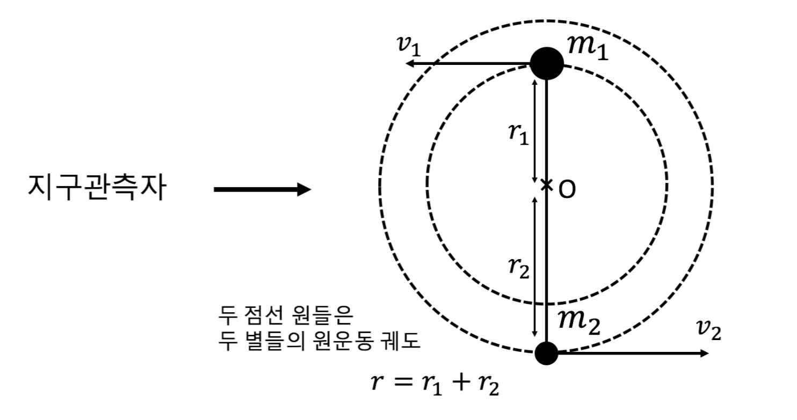

문제 3

위 그림과 같이 질량이 \(m_1\), \(m_2\)인 두 별들이 원점 O를 중심으로 점선의 궤적을 따라 같은 주기로 등속 원운동을 하고 있다. 지구의 관측자는 원점과 두 별 들 사이의 거리인 \(r_1\), \(r_2\)와 별들의 원운동 주기 \(T\)를 측정할 수 있다.
\(r_1 = 1\), \(r_2 = 2\), \(T = \pi\)로 측정되었다고 할 때, 두 별들의 질량 \(m_1\), \(m_2\)를 유도하시오. (단, 만유인력 상수는 \(G\)로 표현한다.) (4점)